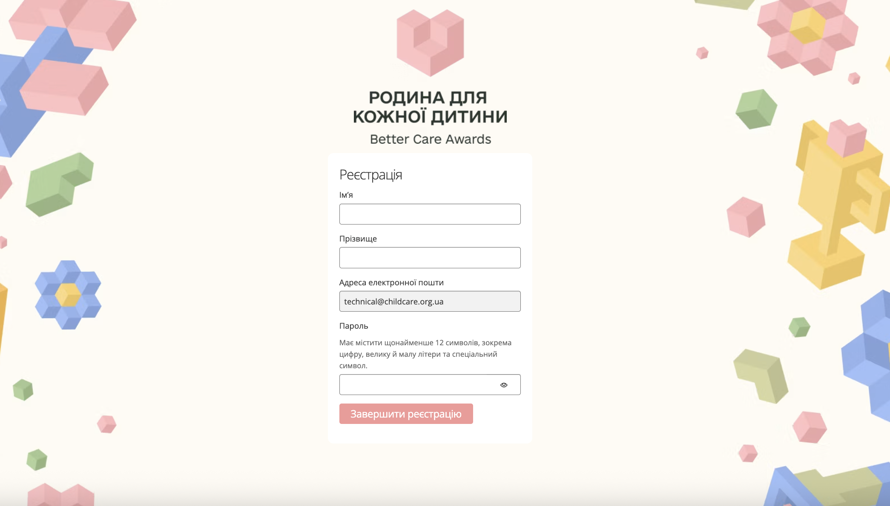
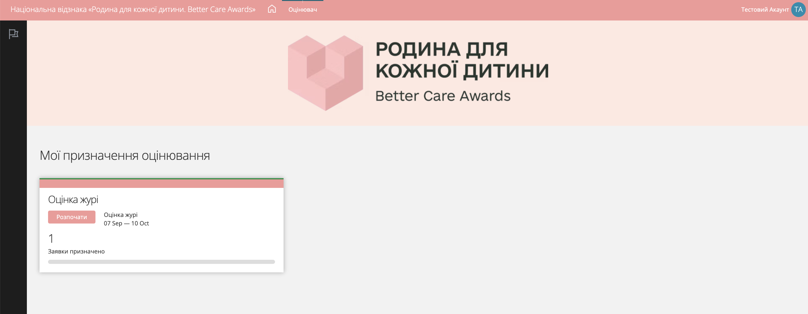
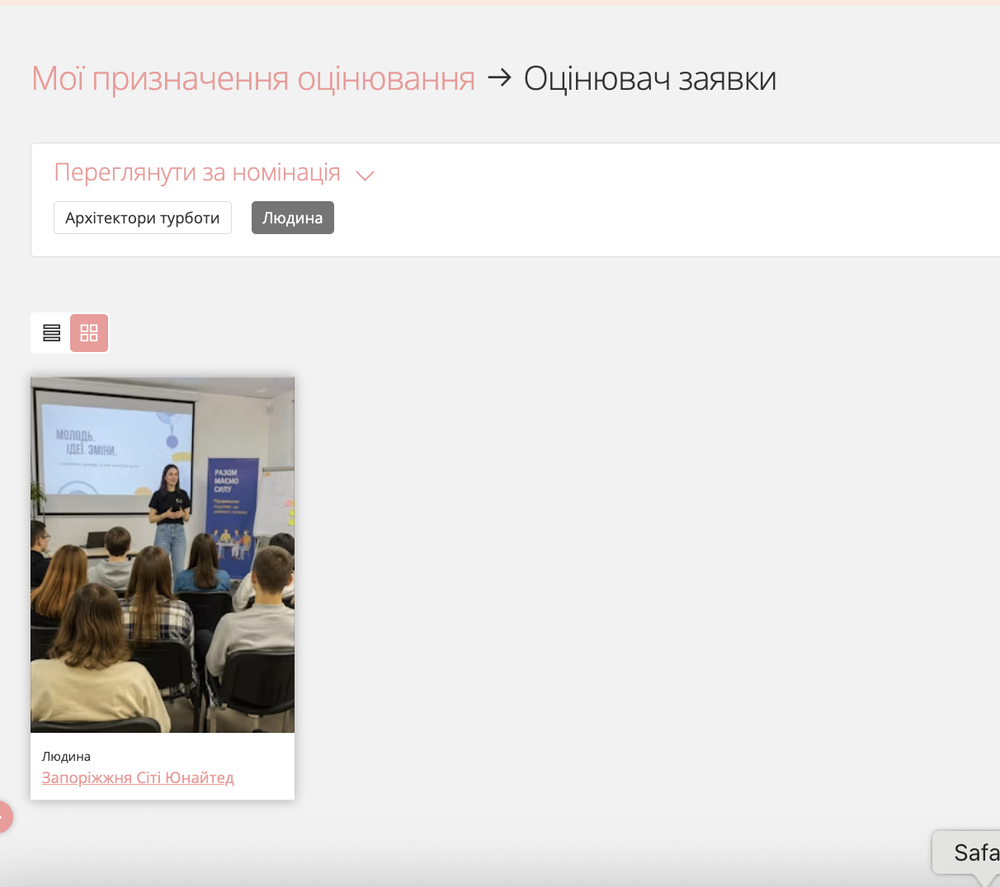
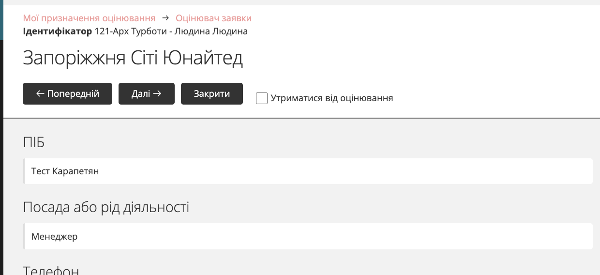
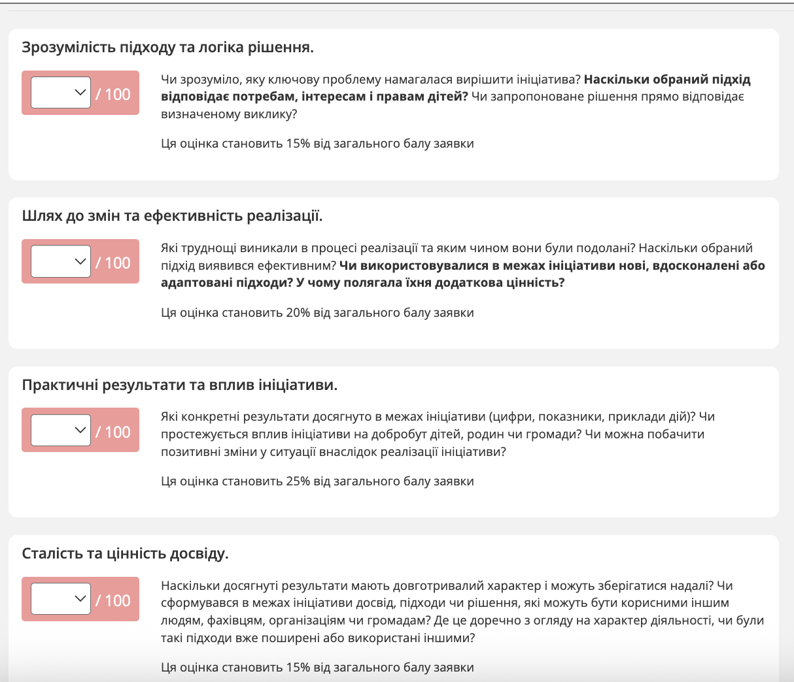
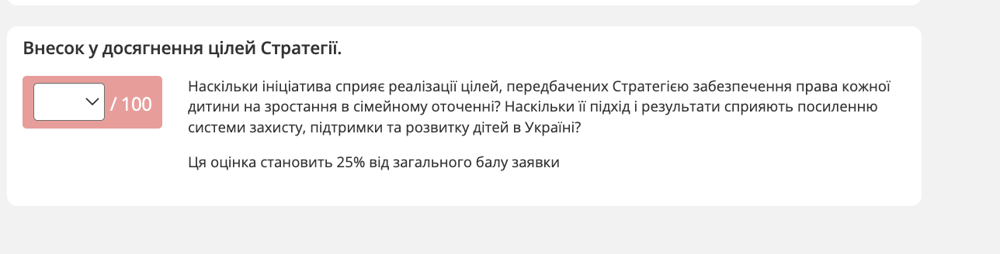
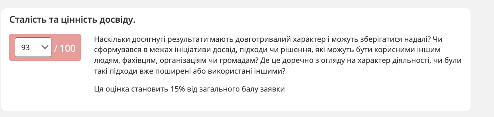

Інструкція для експертного журі: реєстрація та оцінювання заявок
Дякуємо за готовність стати частиною експертного журі національної відзнаки «Родина для кожної дитини»! Для нас честь працювати із вами і ми надзвичайно цінуємо ваш час, фаховість і досвід.
Щоб процес оцінювання був максимально прозорим та об'єктивним, просимо дотримуватися кількох важливих принципів:
Уся робота журі відбувається в розділі «Оцінювач» на платформі (він з'явиться у верхньому меню одразу після входу в кабінет) — саме там ви знайдете призначені вам заявки та зможете виставляти бали.
– Оцінювання відбувається в межах визначеного терміну — його точні дати вказані на сторінці «Мої призначення оцінювання».
– Ви можете редагувати та змінювати свої оцінки протягом усього цього терміну, поки він не завершився.
– Будь ласка, зберігайте конфіденційність та не обговорюйте зміст заявок чи деталі оцінювання поза межами конкурсу.
– Якщо у вас виникнуть запитання щодо критеріїв чи технічної роботи платформи, пишіть нам на bca@childcare.org.ua — ми допоможемо.

Форма реєстрації — заповніть ім'я, прізвище та пароль
Після входу ви потрапите у вкладку «Оцінювач». На екрані «Мої призначення оцінювання» видно розділ оцінювання, терміни оцінювання та кількість заявок, призначених саме вам. Натисніть «Розпочати», щоб перейти до списку заявок.

Тут видно, скільки заявок вам призначено, і кнопку «Розпочати»
– Після натискання кнопки «Розпочати» відкриється перелік анкет, призначених для вашого оцінювання.
– Натисніть на назву або картку потрібної заявки, щоб відкрити її зміст і розпочати оцінювання.

Список заявок з можливістю фільтрувати за номінацією
Кожна заявка оцінюється за п'ятьма критеріями. Біля кожного з них вказано його вагу в загальному балі заявки — звертайте на це увагу, щоб правильно розставити акценти під час оцінювання.
| Критерій | На що звернути увагу | Вага |
|---|---|---|
| Зрозумілість підходу та логіка рішення | Чи зрозуміло, яку ключову проблему намагалася вирішити ініціатива? Наскільки обраний підхід відповідає потребам, інтересам і правам дітей? Чи запропоноване рішення прямо відповідає визначеному виклику? | 15% |
| Шлях до змін та ефективність реалізації | Які труднощі виникали в процесі реалізації та яким чином вони були подолані? Наскільки обраний підхід виявився ефективним? Чи використовувалися нові, вдосконалені або адаптовані підходи? У чому полягала їхня додаткова цінність? | 20% |
| Практичні результати та вплив ініціативи | Які конкретні результати досягнуто (цифри, показники, приклади дій)? Чи простежується вплив на добробут дітей, родин чи громади? Чи можна побачити позитивні зміни в ситуації внаслідок реалізації ініціативи? | 25% |
| Сталість та цінність досвіду | Наскільки досягнуті результати мають довготривалий характер і можуть зберігатися надалі? Чи сформувався в межах ініціативи досвід, підходи чи рішення, корисні іншим людям, фахівцям, організаціям чи громадам? Де це доречно — чи були такі підходи вже поширені або використані іншими? | 15% |
| Внесок у досягнення цілей Стратегії | Наскільки ініціатива сприяє реалізації цілей Стратегії забезпечення права кожної дитини на зростання в сімейному оточенні? Чи мають її підхід і результати ширше значення для розвитку системи захисту, підтримки та розвитку дітей в Україні? | 25% |
Кожен критерій оцінюється від 0 до 100 балів; підсумковий бал заявки формується з урахуванням ваги кожного критерію.
На сторінці заявки спочатку відображається інформація про кандидата: ПІБ/назва організації, посада, контакти та безпосередньо опис кейсу. Ознайомтеся з матеріалами, після чого прогортайте сторінку нижче — до блоку з критеріями.

Дані заявника — прогорніть нижче, щоб перейти до критеріїв
Усього передбачено 5 критеріїв оцінювання. Біля кожного з них зазначено його відсоткову вагу в загальному балі (наприклад, 15% чи 25%) — це підкаже, на чому варто зробити особливий акцент.

Кожен критерій оцінюється від 0 до 100 балів, вага критерію вказана під описом

Останній критерій — відповідність цілям Стратегії
Поставте оцінку від 0 до 100 за кожним із критеріїв, орієнтуючись на запитання під ними.

Приклад: оцінка 93/100 за критерієм «Сталість та цінність досвіду»
– Кнопки «Попередній» та «Далі» дозволяють гортати призначені вам заявки послідовно.
– Кнопка «Закрити» автоматично зберігає поточний прогрес і повертає вас до загального списку.
– Ви можете відредагувати свої оцінки в будь-який момент, поки триває визначений термін оцінювання.
Якщо серед заявників є особа чи організація, щодо якої у вас може виникнути конфлікт інтересів (особисте знайомство, професійна взаємодія тощо) — не оцінюйте цю заявку.